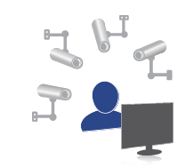

Ixquick mahremiyetinizi korur!
IP adresinizi kaydetmeyen yegâne arama motoru.
Mahremiyetiniz tehlikede!
Normal arama servislerini her kullandığınızda, arama bilgileriniz kaydedilir. Başlıca arama motorları IP adresinizi saptar ve aradığınız terimleri, sitelere ne zamanlar girdiğinizi ve seçtiğiniz bağlantıları kaydetmek için izleme çerezleri kullanır.
Bu aramalar sizin hakkınızda, ilgi duyduğunuz şeyler, ailevi durumlarınız, siyasi eğilimleriniz, tıbbi durumunuz ve daha pek çok şey gibi, inanılmaz miktarda kişisel bilgiyi ele verir. Bu bilgiler, modern çağımızda -hepsi de kişisel arama verilerinizi eline geçirmekten büyük keyif alacak- pazarlamacılar, resmi görevliler, kötü niyetli bilgisayar korsanları ve suçlular için altın değerindedir.
Niçin kaygılanmalısınız?
Büyük arama motorları, kişiler hakkındaki, şimdiye kadar toplanan en büyük veritabanlarını biriktirmiştir. Ne yazık ki bu bilgiler kolaylıkla yanlış ellere geçebilir. Aşağıdaki olayı okuyun:
Ağustos 2006'da, 650.000 kullanıcısı hakkında üç ay boyunca toplanmış olan bilgiler AOL tarafından kazayla kamuoyuna sızıp bütün ayrıntılarıyla bir çevrimiçi veritabanında yayınlandığında Internet dünyası sarsıldı.
Bu veri tabanında halen arama yapılabiliyor. Bu olay, mahremiyet ihlalinin yaratabileceği korkunç sonuçları açıkça gösterdi.
| » Bir arama sözcüğü girip kimler tarafından arandığını bulun » Bu kullanıcının diğer aramalarını bulmak için bir "User ID" alanındaki bir kayda tıklayın |
Korktunuz mu? Yalnız değilsiniz.
Internet'te arama yaptığımızda, en mahrem düşüncelerimizi bilgisayarımız ile paylaşırız. Bu bilgiler güvende olmalıdır.
Ixquick'in tutumu
- Mahremiyetinizin korunması hakkınız.
- Arama verileriniz asla kötü niyetli kişilerin ellerine geçmemelidir.
- Gerçek tek çözüm, verilerinizin hemen silinmesi veya baştan kaydedilmemesidir.
- Ocak 2009’dan beri kullanıcılarımızın IP adreslerini kaydetmiyoruz.
- Kişisel bilgileriniz üçüncü şahıslarla paylaşılmaz.
- Bunu yapan ilk ve tek arama motoru bizdik.
- O zamandan beri, kişisel gizliliğinizi korumak için başka birçok özellik ekledik.
- Bu tavrımız genelde olumlu tepki alıyor
Ixquick, size mümkün olan en yüksek gizlilik düzeyini koruyarak mükemmel arama sonuçları sunma misyonunu, tüm içtenliğiyle sürdürecek!
Ixquick Garantisi
 |
Avrupa Gizlilik Mührü
|
`Certified Secure'un`` güvenlik uzmanları EuroPrise belgelendirme sürecinde Ixquick'e destek olmuştur |
|
Ixquick, Hollanda Veri Koruma Yetkili Kurumu'nda (CBP), M 1346973 numarasıyla kayıtlıdır. Bu Yetkili Kurum, şimdi ve gelecekte gizliliğinizi güvence altına almak üzere, kişisel verilerinizin adil ve yasal kullanımını ve güvenliğini gözetir. |
|
Sektördeki en yüksek SSL şifreleme notuna sahibiz! |
Haberler
10 Haziran 2013
Hangi internet şirketinin kayıtlarını ABD hükümetine vermeyi reddettiğini biliyor musunuz?
Hangi internet şirketinin kayıtlarını ABD hükümetine vermeyi reddettiğini biliyor musunuz?
10 Eylül 2012
StartPage, Bing kullanıcılarının da hizmetlerini kullanmaya başlamasını beklemektedir.
StartPage, Bing kullanıcılarının da hizmetlerini kullanmaya başlamasını beklemektedir.
Ixquick arama motoru, alanında ilk kez verilen gizlilik ödülünü aldı:

14 Temmuz'da Ixquick, ilk Avrupa Gizlilik Mührü ödülüne layık görüldü. Artık Ixquick, AB onaylı ilk ve tek arama motoru.
Basın bildirimizde daha fazlasını okuyun
Basında Ixquick / StartPage
 |
 |
 |
Without Google
|
Spitze ohne Bespitzeln
|
NSA PRISM Leaks Boost Private Search Engines: St...
|
 |
 |
 |
Tracking Cookies are Crummy, says Search Engine...
|
SPrivacy pioneer search engine launches anonymous...
|
Ixquick / Startpage launches anonymous Web search...
|
 |
 |
|
Killer way to slay the Google beast...
|
Ixquick offer anonymous web browsing with new...
|
Does Microsoft + Yahoo = A Privacy Arms Race Among...
|
 |
|
 |
Copernic First to Launch Privacy Desktop...
|
Privacy-protecting search engine ignores IP addresses
|
Protecting yourself from search engines
|
Could meta-search engine usage shield your privacy...
|
Keep Your Internet Searches Private
|
|


 )
)